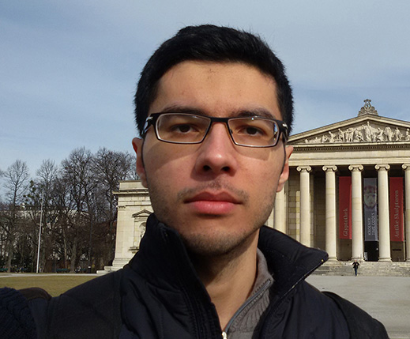

Welcome!I am a PhD candidate working under supervision of Prof. Christoph Kirsch in the Department of Computer Science at the University of Salzburg.Research Interests
|
 |
Education
MSc: Computer Engineering - Software, University of Tehran, Iran
Thesis: System-level quality of control management in stochastic real-time systems.
Supervisor: Dr. Mehdi Kargahi.
BSc: Computer Science, Shahid Beheshti University, Iran
Thesis: Investigation of ways to solve the problem of graph using Maple software.
Supervisor: Dr. Maryam Tahmasebi.
Publications
[1] A. S. Abyaneh and M. Kargahi, "Energy-efficient scheduling for stability-guaranteed embedded control systems," CSI Symposium on Real-Time and Embedded Systems and Technologies (RTEST), Tehran, October 2015.
Abstract: Stability, which is heavily dependent on the controller delays, is the main measure of performance in embedded control systems. With the increased demand for resources in such systems, energy consumption has been converted to an important issue, especially in systems with limited energy sources like batteries. Accordingly, in addition to the traditional temporal requirements in these systems, stability and economic energy usage are further demands for the design of embedded control systems. For the latter demand, dynamic voltage and frequency scaling (DVFS) is too usual, however, as this technique increases the controller delay and jitter, it may negatively impact the system stability. This paper addresses the problem of control task priority assignment as well as task-specific processor voltage/frequency assignment such that the stability be guaranteed and the energy consumption be reduced. The proposed idea considers the task execution-time variability and increases the processor frequency only when the task execution-time exceeds some threshold. Experimental results show energy-efficiency of the proposed method for embedded control systems.
[2] A. S. Abyaneh, "System-level quality of control management in stochastic real-time systems," Master's thesis, University of Tehran, September 2015.
Abstract: Most today's digital control systems implement control algorithms as real-time processing tasks. These tasks usually are to deal with resource limitations due to the restrictions of embedded systems. Although, meeting deadlines is an important requirement in such systems, however, the main objective is to preserve stability and quality of control (QoC) for all the system tasks. This makes most real-time scheduling algorithms inappropriate for embedded control systems. Two main parameters that affect stability and QoC are the response-time and response-time jitter of the control tasks. These parameters encounter variability due to the competition of tasks on limited and shared system resources as well as the considered scheduling policy. Thus, we need appropriate scheduling policies in this thesis, to make a tradeoff between QoC and resource consumption, especially the system energy consumption.
Especially in systems with limited energy resources like batteries, the problem of energy management becomes a more critical issue. Using conventional methods like dynamic voltage and frequency scaling (DVFS), although may reduce the system energy consumption, increases the response-time of control tasks, which negatively impacts the system stability and QoC. We try appropriate priority and processing frequency assignments to control tasks, so that the energy consumption of the system is decreased while task stability and the required QoC level is guaranteed for all tasks. Experimental results show energy-efficiency of the proposed scheduling method for embedded control systems.